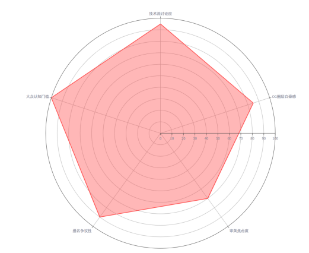

LLM-Powered Video Reverse Engineering System
内容团队手工复盘一条爆款视频平均耗时 2h+，且高度依赖个人经验。 BEtube 将这个流程压缩至 3 分钟——抓取、清洗、大模型分析、可视化报告，一站式完成。
▲ BEtube 操作演示 · 点击播放有声 · 右下角可全屏
| ❌ 数据罗列工具 | → | ✅ 传播逻辑逆向工程系统 |
| ❌ 泛化舆情监控 | → | ✅ 单条视频的深度解剖 |
| ❌ 人工经验驱动 | → | ✅ LLM 语义理解 + 多模型交叉验证 |
| ❌ 仅限单一平台 | → | ✅ YouTube · B站 双引擎，适配器架构可扩展 |
| ❌ 数据持久化风险 | → | ✅ UUID 会话隔离 · 阅后即焚 · 零信任架构 |
Why BEtube Exists
运营 B站（68万+播放）和抖音（400万+播放）两年间，反复遇到同一个困境："知道火了，不知道为什么火"。平台原生面板有数据，但没有解释。
评论区 = 免费的焦点小组。每条高赞评论都是一次消费者深度访谈——用户主动留下，未经修饰，已通过社群投票筛选。
不是"又一个数据面板"，而是一个AI 审计系统：将爆款背后的传播逻辑从"黑盒"降维为可视化的四维数据报告。
我是诸葛童琳（Mobiliteee），AI 工程背景 + 两年独立内容运营经验。在持续产出 B站和抖音视频的过程中，我逐渐积累了一套手工复盘的方法论——但每次复盘仍需要 2-3 小时翻阅评论、手动分类、写总结。当更新频率提升到周更甚至日更时，这套流程完全不可规模化。
我开始思考：如果能系统性地抓取评论区的高赞语料，用大模型替代人工做语义理解和归类，是否可以把 2 小时压缩到 3 分钟？
2025 年初，我用一个周末搭建了 V0.1 原型——当时只是一个命令行脚本，调用 GPT-3.5 分析 YouTube 评论。第一版效果很差：模型对中文饭圈黑话完全误读，抓取速度慢，输出格式混乱。但方向上是对的——我看到了 LLM 在"理解受众情绪"这个任务上的独特优势：它不是做关键词匹配，而是真的能识别「优越感」「身份焦虑」「圈层归属」这类高层次心理。
之后的 6 个月里，经历了 6 次关键迭代，BEtube 从命令行脚本演变成了一个完整的 Streamlit Web 应用，支持多模型路由、B站/YouTube双平台、一键可视化报告。
System Architecture & Tech Stack
传统 Selenium 爬虫方案速度慢（3-5min/条）、频繁触发验证码。BEtube 采用 Header 伪装 + Cookies 注入，直接劫持 B站 / YouTube 底层 API，获取结构化 JSON 数据。速度提升 5-10 倍，稳定性 95%+。
| 视频类型 | 推荐模型 | 原因 |
|---|---|---|
| 中文内娱 / 饭圈 | DeepSeek | 中文语义理解最强，成本可控 |
| 跨境 / 多语言 | GPT-4o | 多语言翻译 + 文化转译能力 |
| 技术 / 科普类 | Kimi | 长文本逻辑链条梳理 |
| 情绪敏感类 | Qwen · Gemini | 多角度情绪识别，交叉验证 |
os.remove 物理删除V0.1 → V1.0 · 6 次关键迭代
解决"空评论" + 中文误读
引入冒泡排序 → 多模型路由
API 劫持替代 Selenium + Prompt 模板化
抓取速度 15s · 输出格式 100% 一致
Streamlit Web UI + 双平台引擎
非技术用户 30s 上手 · 适配器架构可扩展
V0.1 直接抓取全部评论送给 LLM，输出极不稳定，常出现"无明显规律"的空洞结论。
→ 方案：按点赞数降序，仅取 Top 100 高赞评论（已通过社群投票筛选）。
→ 效果：LLM 可操作建议产出率 40% → 85%。
V0.1 仅 GPT-3.5，饭圈黑话（"杏仁巧克力""皇族"）完全误读。
→ 方案：重构为核心路由架构，支持 DeepSeek / GPT-4o / Kimi / Qwen / Gemini。
→ 效果：中文视频情绪识别准确率 55% → 82%。
V0.2 Selenium 单条耗时 3-5min，频繁触发验证码。
→ 方案：逆向 B站 Web API，直接调用 api.bilibili.com。
→ 效果：单条 15s，稳定性 95%+。
输出格式不统一，有时冗长散文，有时过度精简。
→ 方案：设计 6 模块结构化 Prompt（受众画像·情绪分布·Hook分析·高能节点·二创建议·风险预警）。
→ 效果：输出格式一致性 100%。
命令行版本仅限技术用户。
→ 方案：Streamlit 构建 Web 界面：粘贴 URL → 选择模型 → 实时进度 → 一键导出。
→ 效果：非技术用户 30s 完成首次分析。
初期仅 YouTube，但核心阵地是 B站。
→ 方案：重构 fetch 层为适配器模式，YouTube / B站各自实现统一接口。
→ 效果：架构可扩展至 TikTok、抖音、小红书等任意平台。
Who Uses BEtube & Why
—— 如我自己（B站「莫比里的房子鹅」68万+播放）
核心痛点：一个人做选题+制作+复盘，缺乏数据团队支持。
—— 将海外内容本土化，或反向输出
核心痛点：海外爆款国内哑火，文化隔阂导致"前置认知真空"。
—— 批量化竞品分析与内容策略
核心痛点：人工复盘无法规模化，单运营日均 1.5h 花在竞品分析上。
| 用户需求 | BEtube 对应功能 | 设计依据 |
|---|---|---|
| "评论区的人在争论什么" | 六维情绪雷达图 | 基于 LLM 对 Top 100 评论的情绪分类 |
| "哪几秒最关键" | 高能时间戳预测 | 弹幕密度 + 评论引用频率交叉分析 |
| "海外视频怎么改成国内能火" | 去符号化 Hook · 本土化标题重写 | LLM 识别圈层符号 → 替换为泛化标签 |
| "不想学技术，粘贴链接就行" | Streamlit 极简 UI | 单输入框 + 一键分析，30s 上手 |
| "担心数据泄露" | UUID 会话隔离 · 阅后即焚 | 零日志持久化，任务完成即物理删除 |
"以前我复盘一条视频要翻 200 条评论、做一晚上笔记，现在 BEtube 3 分钟给我一份比我自己分析更全面的报告。"
—— B站影视解说区 UP 主（粉丝 12 万），2025.09 内测
"引擎竟然能识别出我视频里饭圈黑话的情绪指向，这一点连我自己的运营团队都没做到。"
—— 跨境 K-pop 内容创业者，2025.10 内测
Case Studies · Sentiment Reverse Engineering
点赞率 2.04%（优秀），评论率仅 0.004% → "被动分发型流量"，缺乏裂变潜力
03:20 扇飞校霸 · 18:30 极致审判 → 独立 Shorts 分发可再提升 30%
去符号化："韩剧"→"社会议题"；FaceFusion 换脸本土硬汉消除文化隔阂
受众为"内娱列文虎克"，享受逐帧拆解动机的智识优越感
"人名壁垒"+"圈层排他性" → 需将饭圈吃瓜转化为职场权术标签
引擎预警：内容存在极高的"前置认知真空"风险。直接搬运会出现"人名壁垒"和"圈层排他性"。
"使用大模型进行'听译+关键词洗标签'。将具体人名替换为符号化称谓（如'某综艺导演'、'某流量小生'）。将饭圈吃瓜，转化为【职场权术】与【综艺内幕】等高泛化标签，完成破圈。"
《她们说在这个视频里 SAKURA 更具有偶像明星的气质...》
评论率极高（0.2%）+ 点赞率极低 → 受众在争夺话语权，而非欣赏内容
技术流鉴赏（主导）+ OG养成系自豪感（辅助）
去符号化 → 职场/技术标签 → AI动作拆解慢放
评论率极高（0.2%），点赞率极低（0.2%）。视频精准触达核心粉丝圈层，激发了强烈的"争吵欲"与"审判欲"。开篇纯舞蹈对比 → 圈外泛用户 5 秒内流失，属于典型的内部梗前置陷阱。
受众为高级鉴赏家，享受"指点江山"的快感，痛点在于对公司硬捧资源的审美焦虑。
老粉通过内部黑话划定领地，表达对原生文化被稀释的身份认同危机。
抛弃 HYBE/Sakura → "选秀节目里，为什么中性风女生总是比甜美风更吸粉？"
《面试时，HR和总监的审美能差多大？》《舞蹈老师不会告诉你的秘密》
AI 运动识别生成动作拆解慢放 + 替换本土爆款 BGM → 洗出"舞蹈教学""泛职场心理"高净值流量池
Data Visualization · 可交互式图表
六维度：认同感 · 优越感 · 愤怒 · 焦虑 · 期待 · 困惑
基于 LLM 对 Top 100 评论的情绪分类 × 情绪强度系数

Top 100 高赞语料 · jieba 分词 · TF-IDF 加权
高频词自动归类：技术讨论 / 情感表达 / 圈层黑话
Plotly 雷达图：将 LLM 输出的 6 维情绪分数映射到交互式多边形图表，支持悬停查看每项情绪的代表性评论原文。
WordCloud 词云：对清洗后的 Top 100 评论做 jieba 中文分词，TF-IDF 加权后生成词云。词云配色自动适配视频封面主色调。
流量漏斗诊断卡：四层漏斗（播放→点赞→评论→转发），每层转化率与同类视频基准值对比，异常值自动标红并生成可能原因推测。
Limitations · 任何工具都有边界
模型偶尔过度解读——给随意评论赋予不存在的"深层含义"。已通过多模型交叉验证缓解，但无法 100% 消除。
平台 API 限 200 条评论，对百万级播放视频可能不具统计代表性。已通过点赞排序确保每一条都是高质量样本。
跨境分析时，敬语层级、空気読め等微妙表达会丢失。Prompt 中已要求模型标注不确定项。
高频词 X 不一定是视频成功的原因。报告已区分"相关性发现"和"因果推断"。
需手动触发分析，无法持续监控舆论变化（如翻车事件）。已列入中期路线图。
当 AI 精确预测"观众想看什么"，创作者是否会被数据异化？BEtube 定位为辅助决策工具，而非创作替代品。
这六项局限中，第⑥项是我最常自省的问题。
作为一个同时是内容创作者和工具开发者的人，我每天都在走钢索：一方面，BEtube 确实能帮我更高效地理解观众、做出更精准的内容决策；另一方面，我必须警惕"数据决定一切"的思维惯性。
有些最好的内容，恰恰来自于对数据的"反叛"——那些直觉驱动的、不理性的、不投其所好的创作。如果 10 年前有人用 BEtube 分析 YouTube，它可能会告诉你："别做 vlog，数据不好"。但 vlog 最终定义了整个时代的媒介语言。
所以 BEtube 的设计哲学是：数据为创意提供信息，而不是替代创意。这也是为什么报告中永远有一栏叫"风险预警"——提醒你，某些建议可能是短视的。
Where BEtube Is Going
"让每一个内容创作者，都能用工程师的思维方式理解自己的观众。"
BEtube 的终极目标不是成为一个"数据分析工具"，而是成为内容行业的共同操作系统——连接创作者直觉与受众反馈之间的那最后一道鸿沟。